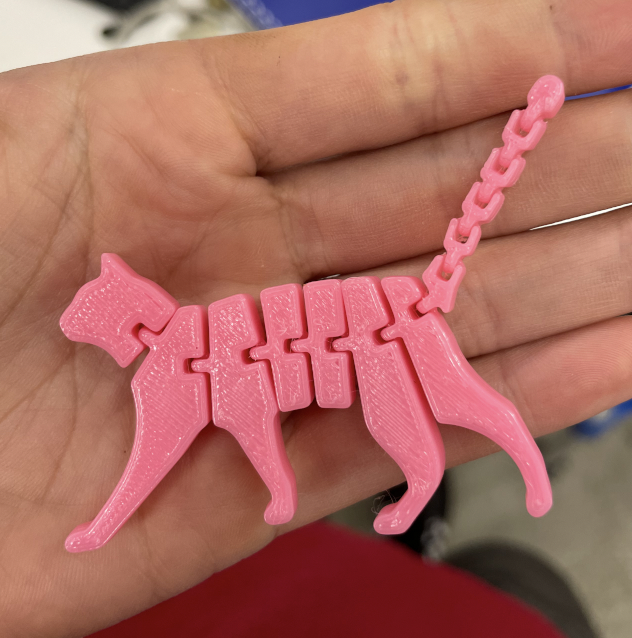
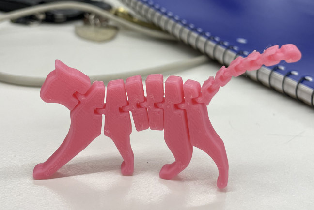
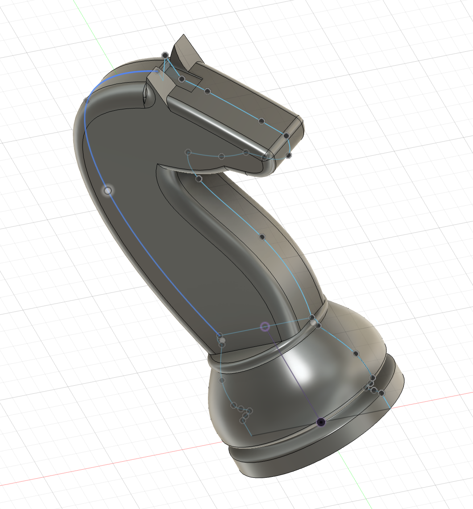
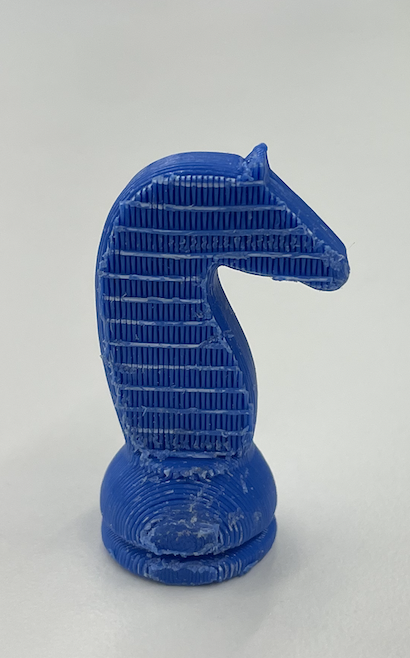
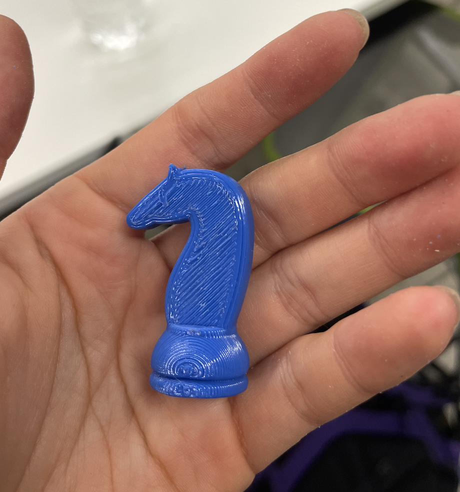
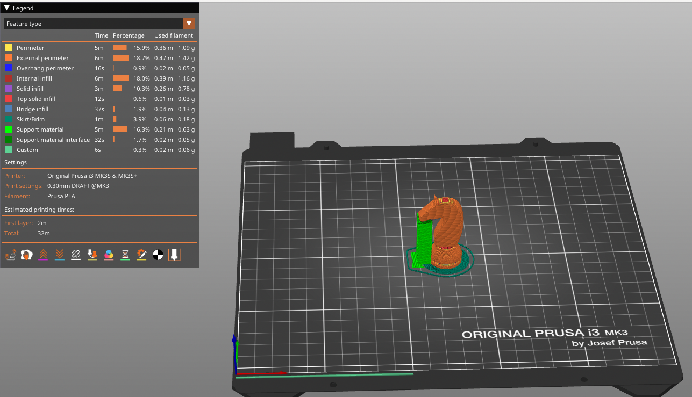
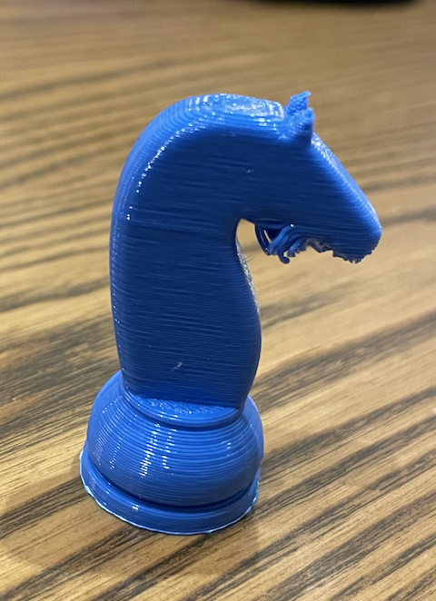
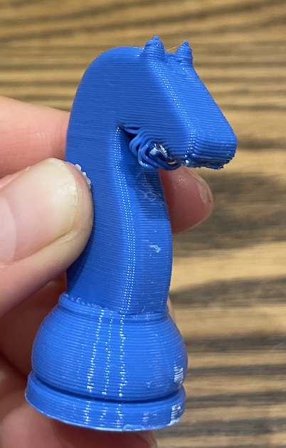
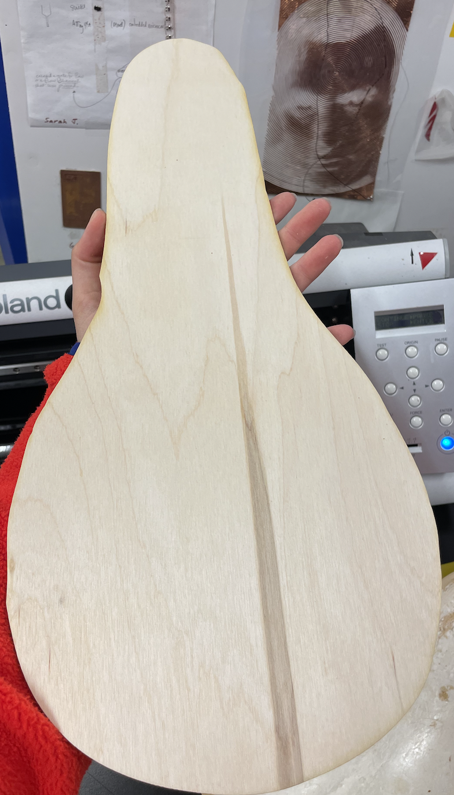
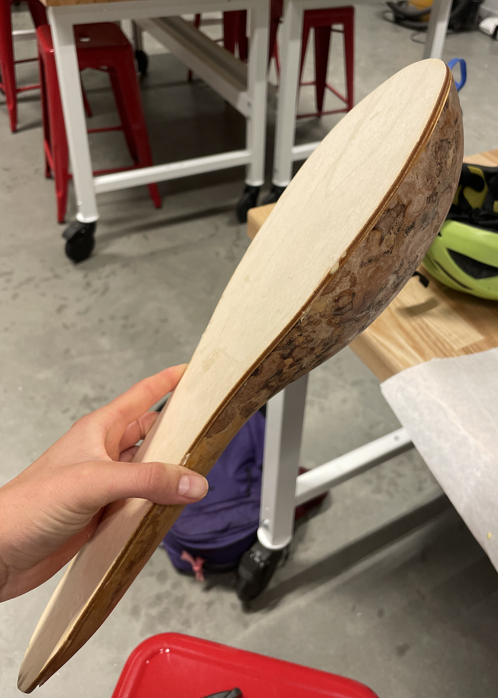

Since this was my first time using a 3D printer, I decided to start by printing a downloaded file just to see how the machine worked. I was intrigued by the ability of the machine to print a structure made of different components that could not be easily assembled by hand. Specifically, I wanted to try making a flexible toy with interlocking parts that would allow the body to bend. I like cats, so I found a file on Thingiverse of a flexible cat toy and downloaded it. My first attempt printing it failed for some reason--I think the structure started to bend over and so the rest of the print could not be added correctly. However, I tried again and it came out great! Here is a picture. As you can see, my cat can stand!
 Now it was time to model my own 3D object that could not be easily made by subtractive methods. I first played around with the Forms mode in Fusion and learned a lot of interesting techniques to make figurines from a tutorial I read, but ultimately decided to model my object in the normal Fusion mode. I made a knight chess piece, taking inspiration from a tutorial I watched. This provided good practice with the spline feature, allowing me to make the body, head, and ears of the horse just the shape I wanted. Here is how my final model looked in Fusion.
I then exported this as an STL file to PrusaSlicer. After enabling supports on the base plate as well as a brim, my structure was deemed stable. The first time I tried this, PrusaSlicer automatically laid the knight down on its side, essentially printing horizontally. This meant that half of the horse was entirely encased in the support structure. Though it printed successfully, I had a lot of trouble extracting the actual figurine from the support, and it resulted in a strange waffle pattern on the side of the horse which I was not able to remove. See below:
 I then tried printing again, but this orienting the knight vertically in PrusaSlicer so there wouldn't be so much of its surface area touching the base plate. In this case, the support extended from the base plate all the way to the horse's nose, effectively holding its head up, rather than encasing the entire body of the horse. Here is a picture of the Gcode for this orientation:
As a result, this print was much easier to extract from the support and thus resulted in a cleaner, smoother figurine. However, there was not room to support the entire head, and so the part closer to the neck ended up with minor spaghetti effect. It kind of looks like the horse has a beard:
 Overall, I think I like the vertically printed one better, as it looks neater and also has better definition on the ear features.
You can download the files for the knight here:
Download my Fusion 3D model file
I am really excited by the capabilities of the Revopoint scanning machine in theory because it seems so amazing to be able to turn an object in real life into an accurate 3D model on a computer in a matter of seconds. It turns out that the scanner doesn't work quite so seamlessly, but it was still interesting to work with. I wanted to try to scan a human head, and I started with Bobby's head. However, the scanner doesn't work too well with shiny objects, and it seemed that Bobby's head was too shiny for the scanner to properly comprehend. I then switched to my own head. I turned on the scanner and then slowly swiveled in my chair in a full 360 circle until the scanner had captured as much information as possible. Then I filled in the holes in the mesh using the auto fill feature in the software. Though it flattened my head a bit, it actually captured a lot of details in my face and hair, which was pretty impressive. Unfortunately, I'm not sure how to open the ply file that contains my scan, so I cannot include a picture here. I'll have to work on that.
Through discussions with Ibrahim and other course staff, I've decided on a shutter model for my "smart roof" idea. I modeled one set of these shutters in Fusion--you can see it, along with a bill of materials and a timeline, in the Final tab on my page. It took me an extremely long time to model the shutters, so I did not have as much time to think about where to attach the circuitry for the sensor as I would like. I will definitely continue thinking about this in the coming weeks.
I'm beginning to feel significantly more comfortable in Fusion, which is very rewarding, and I was able to use it to create a piece for my pipa instrument (a traditional Chinese instrument similar to a mandolin and shaped like a pear) that I am building for another class. My instrument body consists of half of a gourd attached to a face plate, and I needed to make the face plate out of wood to perfectly match the size and shape of the gourd. Since the gourd is an organic and curvy shape, this seemed pretty difficult to model. However, I learned how to import a photo of the gourd into Fusion as a canvas, and then calibrate that canvas with the precise measurements of my gourd in real life. Then I was able to use the spline tool to trace the outline of the gourd, thus creating a shape that exactly matched that of the gourd. It turned out quite well, and it is really cool and exciting to see how the skills I am learning in this class are very useful in other parts of my life as well.
 